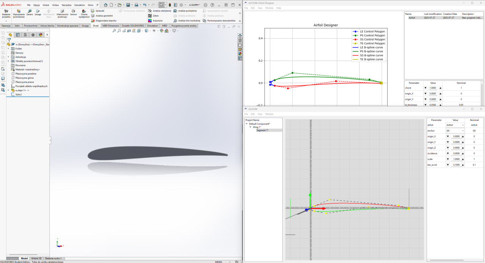
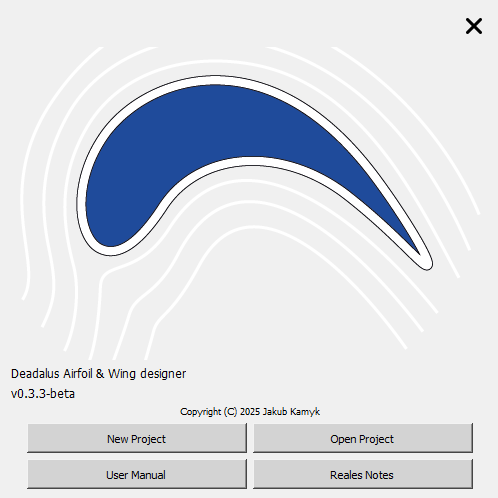
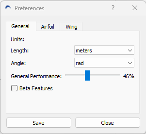

Introduction
Welcome to the Daedalus user manual. Daedalus is a program for designing and editing airfoils and wings. This manual will guide you through the main features and help you get started with your projects.
- Design and modify airfoils with intuitive tools.
- Import/export airfoil files in various formats.
- Use the Wing Workbench for advanced wing design.

Daedalus
Daedalus consists of two modules: 2D airfoil designer and 3D wing designer. Each module is equipped with Menu Bar which allows for usage of functions and interaction with program objects and program itself. Global program interactions can be made through the File and Program menus.
Getting Started
Once DAEDALUS program is started user will be welcomed by Splash Screen of the program. With splash screen you can:
- Create new project: Start a new project.
- Open existing project: Load an existing project file.
- Open user manual: Go directly to user manual without closing the Splash Screen
- Open realise notes: Opens web browser with latest realise notes (reqires ethernet connection)

Once new File or Open Project is clicked an Airfoil Designer window opens. In every module user can interact with bar menu sections:
File Menu
Allows user to interact with PROJECT itself. Available interactions and functions are:
- New: Start a new project.
- Open: Load an existing project file.
- Save: Save your current project.
- Exit: Closes program after clarification.
Program Menu
Allows user to interact and get information about PROGRAM itself. Basic interactions are:
- User Manual: If user gets lost while using program, user manual can be displyed from here.
- About: Show information about the program.
- Preferences: Adjust program settings.
Preferences
Preferences window allows user to customize the program settings according to needs.
Units - sets units FOR STEP EXPORT ONLY! (at least for now)
- Length: allows to set length unit (for now only meters available)
- Angle: allows to set angle unit (for now only radians)
